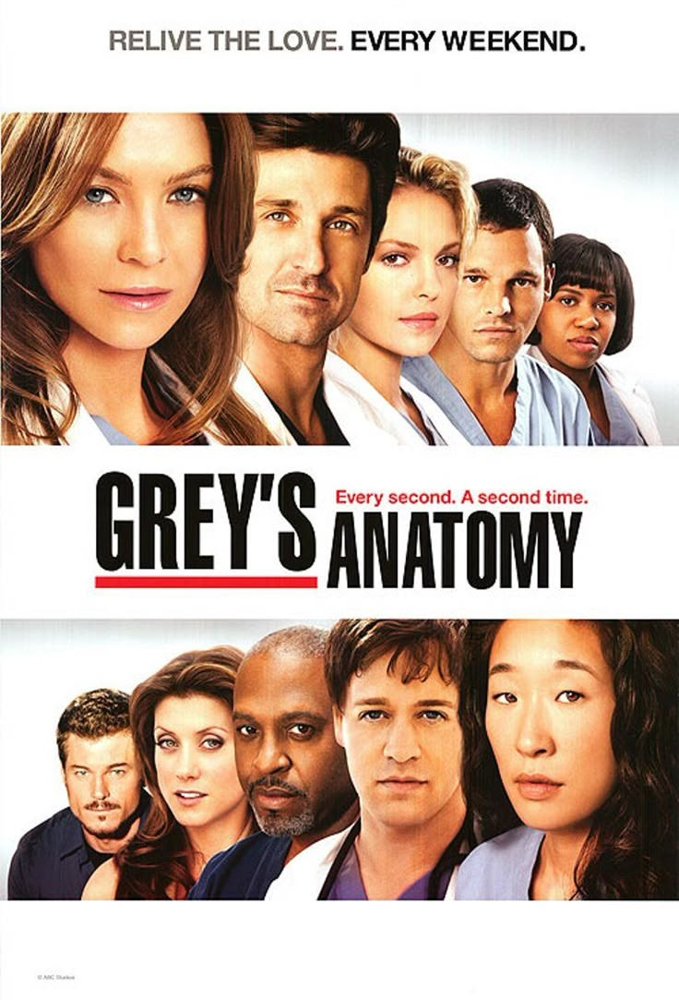
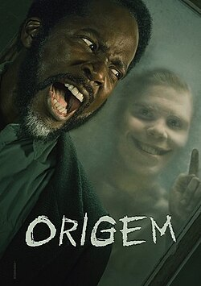
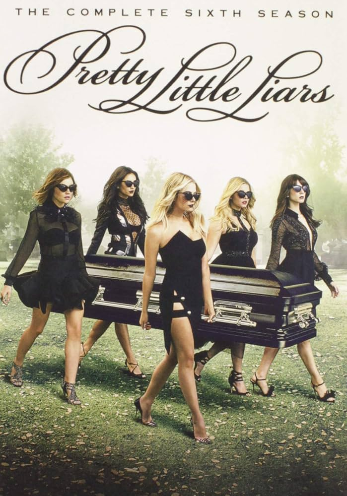

10º Grey's Anatomy

A série médica de enorme sucesso foca em um grupo de jovens médicos do Hospital Grace Mercy West, de Seattle, que começaram a carreira na própria instituição como residentes. Um dos jovens médicos que dá nome ao show, Meredith Grey, é filha de um famoso cirurgião. Meredith luta para manter as relações com seus colegas, especialmente o chefe do centro cirúrgico, Richard Webber, devido ao relacionamento que já existia entre os dois, Webber teve um caso com a mãe de Meredith na época em que ela era jovem.
9º De volta aos 15
Anita é uma mulher insatisfeita com sua vida que ganha a chance de ter 15 anos novamente. Ela revive seus dias de escola e pode fazer novas escolhas, mas reescrever sua própria história é mais difícil do que ela pensava.
8º Cidade Invisível
Um detetive, atormentado pelas investigações de um assassinato, se envolve em uma batalha entre o mundo visível e um reino subterrâneo habitado por criaturas folclóricas.
7º Eu Nunca...
Devi não é uma adolescente muito popular, mas está decidida a mudar isso.
6º Jeffrey Dahmer
Jeffrey Lionel Dahmer foi um assassino em série americano. Assassinou dezessete homens e garotos, entre 1978 e 1991, a maioria entre os anos de 1989 e 1991. Seus crimes eram particularmente hediondos, envolvendo estupro, necrofilia e canibalismo.
5º From

Uma família viaja em um trailer quando se perde na estrada. Eles buscam direções em um pequeno povoado, mas logo percebem que estão presos em um loop e não conseguem deixar o lugar, encurralados por forças misteriosas.
4º You
Obsessivo e mortalmente charmoso, Joe vai ao extremo para entrar na vida de quem o fascina. Por trás de seus modos gentis, há uma fúria assassina e um passado perturbador.
3º Bom dia, Verônica
Uma policial investiga um predador sexual e acaba descobrindo um casal com um segredo horrível e um esquema de corrupção sinistro.
2º Stranger Things

Na década de 1980, um grupo de amigos se envolve em uma série de eventos sobrenaturais na pacata cidade de Hawkins. Eles enfrentam criaturas monstruosas, agências secretas do governo e se aventuram em dimensões paralelas.
1º Pretty Little Liars

Depois do desaparecimento de Alison, as adolescentes Spencer, Aria, Hanna e Emily, agora no ensino médio, têm um novo desafio: desvendar mensagens anônimas ameaçando contar seus segredos.